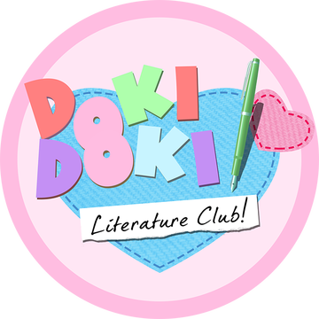

Poems in DDLC

Sayori
Dear Sunshine
The way you glow through my blinds in the morning
It makes me feel like you missed me.
Kissing my forehead to help me out of bed.
Making me rub the sleepy from my eyes.
Are you asking me to come out and play?
Are you trusting me to wish away a rainy day?
I look above. The sky is blue.
It's a secret, but I trust you too.
If it wasn't for you, I could sleep forever.
But I'm not mad.
I want breakfast.
Bottles
I pop off my scalp like the lid of a cookie jar.
It's the secret place where I keep all my dreams.
Little balls of sunshine, all rubbing together like a bundle of kittens.
I reach inside with my thumb and forefinger and pluck one out.
It's warm and tingly.
But there's no time to waste! I put it in a bottle to keep it safe.
And I put the bottle on the shelf with all of the other bottles.
Happy thoughts, happy thoughts, happy thoughts in bottles, all in a row.
My collection makes me lots of friends.
Each bottle a starlight to make amends.
Sometimes my friend feels a certain way.
Down comes a bottle to save the day.
Night after night, more dreams.
Friend after friend, more bottles.
Deeper and deeper my fingers go.
Like exploring a dark cave, discovering the secrets hiding in the nooks and crannies.
Digging and digging.
Scraping and scraping.
I blow dust off my bottle caps.
It doesn't feel like time elapsed.
My empty shelf could use some more.
My friends look through my locked front door.
Finally, all done. I open up, and in come my friends.
In they come, in such a hurry. Do they want my bottles that much?
I frantically pull them from the shelf, one after the other.
Holding them out to each and every friend.
Each and every bottle.
But every time I let one go, it shatters against the tile between my feet.
Happy thoughts, happy thoughts, happy thoughts in shards, all over the floor.
They were supposed to be for my friends, my friends who aren't smiling.
They're all shouting, pleading. Something.
But all I hear is echo, echo, echo, echo, echo
Inside my head.
%
Get out of my head. Get out of my head. Get out of my head. Get out of my head. Get out of my head. Get out of my head. Get out of my head. Get out of my head. Get out of my head. Get out of my head. Get out of my head. Get out of my head. Get out of my head. Get out of my head. Get out of my head. Get out of my head. Get out of my head. Get out of my head. Get out of my head. Get out of my head. Get out of my head. Get out of my head. Get out of my head. Get out of my head. Get out of my head. Get out of my head. Get out of my head. Get out of my head. Get out of my head. Get out of my head. Get out of my head. Get out of my head. Get out of my head. Get out of my head. Get out of my head. Get out of my head. Get out of my head. Get out of my head. Get out of my head. Get out of
Get.
Out.
Of.
My.
Head.
Get out of my head before I do what I know is best for you.
Get out of my head before I listen to everything she said to me.
Get out of my head before I show you how much I love you.
Get out of my head before I finish writing this poem.
But a poem is never actually finished.
It just stops moving.
Take My Hand
Take my hand, take me forward.
Take me to your dream land
Caution me to watch my step,
So I can't look back at my footprints.
Climb the stairs ahead of me
While I look up to you.
The more I look forward, the more I look up,
The more I can lend to you.
If you can trust me to follow your pace,
I'll trust you to set it.
If you can trust me to lend you a smile,
I'll trust you to return it.
Take my hand, take me forward.
Take me to your dream land.
Become the Flower
A feeling of joy is a flower plucked from the ground.
The color, the scent. It's so pretty in my hair.
Every day, I pluck some flowers, as though they grew just for me.
A lifetime of peace and nourishment, yanked away in an instant.
All for me. All for joy.
I need more.
I need more joy. I need more happy.
Pluck, pluck, pluck. Every day.
Pluck, pluck, pluck. So pretty in my hair.
Pluck, pluck, pluck. You're going to die, and you, too.
Beneath my feet, a flower stands alone. It beckons to me.
I twist the stem, freeing it from its clinging roots,
Caressing the final joyous moment between my fingers.
But to what ends?
I look in every direction.
And the field I stand in,
The prosperous field,
Is a barren wasteland.
The fruits of my labor. The carnage of my joy.
And that is why
I've decided
I must
Become the flower.
Sayori’s Special Events Poem
There once was a ladybug.
It was so small, it took a really long time to crawl from here to there.
It was very tiring to fly for too long.
Nobody squishes ladybugs because they're cute.
Does that make them better than other bugs?
Do ladybugs know they're cute?
I think they're too preoccupied with bug things.
And so, the ladybug crawled around and did bug things.
This story wasn't really going anywhere.
But I know you don't mind.
I hope you think it's nice for being there anyway.
Like ladybugs.
Like this ladybug.
The one who clings like a doof onto your sleeve because it knows you won't squash it.
If it doesn't bug you,
Will you stay awhile?
Natsuki
Eagles Can Fly
Monkeys can climb
Crickets can leap
Horses can race
Owls can seek
Cheetahs can run
Eagles can fly
People can try
But that's about it.
Amy Likes Spiders
You know what I heard about Amy?
Amy likes spiders.
Icky, wriggly, hairy, ugly spiders!
That's why I'm not friends with her.
Amy has a cute singing voice.
I heard her singing my favorite love song.
Every time she sang the chorus, my heart would pound to the rhythm of the words.
But she likes spiders.
That's why I'm not friends with her.
One time, I hurt my leg really bad.
Amy helped me up and took me to the nurse.
I tried not to let her touch me.
She likes spiders, so her hands are probably gross.
That's why I'm not friends with her.
Amy has a lot of friends.
I always see her talking to people.
She probably talks about spiders.
What if her friends start to like spiders too?
That's why I'm not friends with her.
It doesn't matter if she has other hobbies.
It doesn't matter if she keeps it private.
It doesn't matter if it doesn't hurt anyone.
It's gross.
She's gross.
The world is better off without spider lovers.
And I'm gonna tell everyone.
Because You
Tomorrow will be brighter with me around
But when today is dim, I can only look down.
My looking is a little more forward
Because you look at me.
When I want to say something, I say it with a shout!
But my truest feelings can never come out.
My words are a little less empty
Because you listen to me.
When something is above me, I reach for the stars.
But when I feel small, I don't get very far.
My standing is a little bit taller
Because you sit with me.
I believe in myself with all of my heart.
But what do I do when it's torn all apart?
My faith is a little bit stronger
Because you trusted me.
My pen always puts my feelings to the test.
I'm not a good writer, but my best is my best.
My poems are a little bit dearer
Because you think of me.
Because you, because you, because you.
I’ll Be Your Beach
Your mind is so full of troubles and fears
That diminished your wonder over the years
But today I have a special place
A beach for us to go.
A shore reaching beyond your sight
A sea that sparkles with brilliant light
The walls in your mind will melt away
Before the sunny glow.
I'll be the beach that washes your worries away
I'll be the beach that you daydream about each day
I'll be the beach that makes your heart leap
In a way you thought had left you long ago.
Let's bury your heavy thoughts in a pile of sand
Bathe in sunbeams and hold my hand
Wash your insecurities in the salty sea
And let me see you shine.
Let's leave your memories in a footprint trail
Set you free in my windy sail
And remember the reasons you're wonderful
When you press your lips to mine.
I'll be the beach that washes your worries away
I'll be the beach that you daydream about each day
I'll be the beach that makes your heart leap
In a way you thought had left you long ago.
But if you let me by your side
Your own beach, your own escape
You'll learn to love yourself again.
The Best Place in the World
I love my bedroom.
It's full of bright colors and soft things.
The sunlight shines in and makes everything sparkle.
It's the best place in the world.
It has all my treasures.
All my books, my collections, my memories.
All of my dreams were born in this room.
It's the best place in the world.
It has all my secrets.
All my failures, my fears, my feelings.
Sometimes it feels so fragile that the door will break at the slightest touch.
But it's still the best place in the world.
But when someone knocks, I get scared.
I brace my arms against the loose hinges.
Please don't break. Don't come in. I'm not ready.
It's MY best place in the world.
The knocking won't stop.
I block the door with furniture.
An eye peeks through the keyhole, and I panic. I'm trapped in the best place in the world.
I'm not ready to share my favorite place.
I need to clean my secrets and make my bed to hide my nightmares.
I need to touch them to put them away. To see them again.
I have so much to do and I'm scared. I'm not ready.
But It's still my favorite place.
I still want to share it.
However long it takes, if you wait patiently,
I'll eventually open the door.
And I'll show you the best place in the world.
Natsuki’s Special Events Poem
I named my pen
The Expression Express
My feelings aboard
With a ticket to you
No room for stammers
No lies
No extra stops
No compromise
Stations screaming by
Attendants saying hi
One ticket to you
Please and thank you
Take a headphone
And doze
No bumps in the rails
Just thumps in my heart
And loops in my letters
And clouds in the sky
And dreams in your eyes
Hey, wake up
The train has arrived
Expression Express, destination you
Chuu Chuu
Yuri
Ghost under the light
The tendrils of my hair illuminate beneath the amber glow.
Bathing.
It must be this one.
The last remaining streetlight to have withstood the test of time.
The last yet to be replaced by the sickening blue-green of the future.
I bathe. Calm; breathing air of the present but living in the past.
The light flickers.
I flicker back.
The Raccoon
It happened in the dead of night while I was slicing bread for a guilty snack.
My attention was caught by the scuttering of a raccoon outside my window.
That was, I believe, the first time I noticed my strange tendencies as an unordinary
human.
I gave the raccoon a piece of bread, my subconscious well aware of the consequences.
Well aware that a raccoon that is fed will always come back for more.
The enticing beauty of my cutting knife was the symptom.
The bread, my hungry curiosity.
The raccoon, an urge.
The moon increments its phase and reflects that much more light off of my cutting
knife.
The very same light that glistens in the eyes of my raccoon friend.
I slice the bread, fresh and soft. The raccoon becomes excited.
or perhaps I'm merely projecting my emotions onto the newly-satisfied animal.
The raccoon has taken to following me.
You could say that we've gotten quite used to each other.
The raccoon becomes hungry more and more frequently, so my bread is always handy.
Every time I brandish my cutting knife the raccoon shows me its excitement.
A rush of blood. Classic Pavlovian conditioning. I slice the bread.
And I feed myself again.
Ghost under the Light pt. 2
The tendrils of my hair illuminate beneath the amber glow.
Bathing.
In the distance, a blue-green light flickers.
A lone figure crosses its path– a silhouette obstructing the eerie glow.
My heart pounds. The silhouette grows. Closer Closer
I open my umbrella, casting a shadow to shield me from visibility.
But I am too late.
He steps into the streetlight. I gasp and drop my umbrella.
The light flickers. My heart pounds. He raises his arm.
Time stops.
The only indication of movement is the amber light flickering against his outstretched
arm.
The flickering light is in rhythm with the pounding of my heart.
Teasing me for succumbing to this forbidden emotion.
Have you ever heard of a ghost feeling warmth before?
Giving up on understanding, I laugh.
Understanding is overrated.
I touch his hand. The flickering stops.
Ghosts are blue-green. My heart is amber.
Beach
A marvel millions of years in the making.
Where the womb of Earth chaotically meets the surface.
Under a clear blue sky, an expanse of bliss -
But beneath gray rolling clouds, an endless enigma.
The easiest world to get lost in
is one where everything can be found.
One can only build a sand castle where the sand is wet.
But where the sand is wet, the tide comes.
Will it gently lick at your foundations until you give in?
Or will a sudden wave send you crashing down in the blink of an eye?
Either way the outcome is the same.
Yet we still build sand castles.
I stand where the foam wraps around my ankles.
Where my toes squish into the sand.
The salty air is therapeutic.
The breeze is gentle, yet powerful.
I sink my toes into the ultimate boundary line, tempted by the foamy tendrils.
Turn back, and I abandon my peace to erode at the shore.
Drift forward, and I return to Earth forevermore.
Wheel
A rotating wheel. Turning an axle. Grinding. Bolthead. Linear gearbox. Falling sky. Seven holy stakes. A docked ship. A portal to another world. A thin rope tied to a thick rope. A torn harness. Parabolic gearbox. Expanding universe. Time controlled by slipping cogwheels. Existence of God. Swimming with open water in all directions. Drowning. A prayer written in blood. A prayer written in time-devouring snakes with human eyes. A thread connecting all living human eyes. A kaleidoscope of holy stakes. Exponential gearbox. A sky of exploding stars. God disproving the existence of God. A wheel rotating in six dimensions. Forty gears and a ticking clock. A clock that ticks one second for every rotation of the planet. A clock that ticks forty times every time it ticks every second time. A bolthead of holy stakes tied to the existence of a docked ship to another world. A kaleidoscope of blood written in clocks. A time-devouring prayer connecting a sky of forty gears and open human eyes in all directions. Breathing gearbox. Breathing bolthead. Breathing ship. Breathing portal. Breathing snakes. Breathing God. Breathing blood. Breathing holy stakes. Breathing human eyes. Breathing time. Breathing prayer. Breathing sky. Breathing wheel.
Yuri’s Special Events Poem
My conductor motions for one crescendo after the next, each time falling short of a climax.
The lump in my throat is carried by Sisyphus.
How many words must I choose not to say before they finally break loose, orderlessly piling out of my mouth like a flock of schoolchildren at the start of recess?
Pen cannot be erased. but even that metaphor fails comically as my floor is littered, blanketed with wasted paper.
A canvas of my mind, full of disjointed thoughts and unfinished sentences.
Perhaps, all along, it was wrong to try forcing them out of my room.
And I should instead invite you in.
Monika
Hole in Wall
It couldn't have been me.
See, the direction the spackle protrudes.
A noisy neighbor? An angry boyfriend? I'll never know. I wasn't home.
I peer inside for a clue.
No! I can't see. I reel, blind, like a film left out in the sun.
But it's too late. My retinas.
Already scorched with a permanent copy of the meaningless image.
It's just a little hole. It wasn't too bright.
It was too deep.
Stretching forever into everything.
A hole of infinite choices.
I realize now, that I wasn't looking in.
I was looking out.
And he, on the other side, was looking in.
Save Me
The colors, they won't stop.
Bright, beautiful colors
Flashing, expanding, piercing
Red, green, blue
An endless
cacophony
Of meaningless
noise
The noise, it won't stop.
Violent, grating waveforms
Squeaking, screeching, piercing
Sine, cosine, tangent
Like playing a chalkboard on a turntable
Like playing a vinyl on a pizza crust
An endless
poem
Of meaningless
Load Me
The Lady who Knows Everything
An old tale tells of a lady who wanders Earth.
The Lady who Knows Everything.
A beautiful lady who has found every answer,
All meaning,
All purpose,
And all that was ever sought.
And here I am,
a feather
Lost adrift the sky, victim of the currents of the wind.
Day after day, I search.
I search with little hope, knowing legends don't exist.
But when all else has failed me,
When all others have turned away,
The legend is all that remains – the last dim star glimmering in the twilit sky.
Until one day, the wind ceases to blow.
I fall.
And I fall and fall, and fall even more.
Gentle as a feather.
A dry quill, expressionless.
But a hand catches me, between the thumb and forefinger.
The hand of a beautiful lady.
I look at her eyes and find no end to her gaze.
The Lady who Knows Everything knows what I am thinking.
Before I can speak, she responds in a hollow voice.
"I have found every answer, all of which amount to nothing.
There is no meaning.
There is no purpose.
And we seek only the impossible.
I am not your legend.
Your legend does not exist."
And with a breath, she blows me back afloat, and I pick up a gust of wind.
Hole in Wall (2)
But he wasn't looking at me.
Confused, I frantically glance at my surroundings.
But my burned eyes can no longer see color.
Are there others in this room? Are they talking?
Or are they simply poems on flat sheets of paper,
The sound of frantic scrawling playing tricks on my ears?
The room begins to crinkle.
Closing in on me.
The air I breathe dissipate before it reaches my lungs.
I panic. There must be a way out.
It's right there. He's right there.
Swallowing my fears, I brandish my pen.
Save Me (2)
The colors, they won't
Bright, bea t ful c l rs
Flash ng, exp nd ng, piercing
Red, green, blue
An ndless
CACOPHONY
Of meaningless
noise
The noise, it won't STOP.
Viol nt, grating w vef rms
Sq e king, screech ng, piercing
SINE, COSINE, TANGENT
Like play ng a ch lkboard on a t rntable
Like playing a KNIFE on a BREATHING RIBCAGE
n ndl ss
p m
Of m n ngl ss
Delete Her
Happy End
Pen in hand, I find my strength.
The courage endowed upon me by my one and only love.
Together, let us dismantle this crumbling world
And write a novel of our own fantasies.
With a flick of her pen, the lost finds her way.
In a world of infinite choices, behold this special day.
After all,
Not all good times must come to an end
Monika’s Special Events Poem
An electrical signal from some remote corner of my brain.
Connecting all kinds of circuits and nerves and chemicals in a web understood by nobody.
The chemicals make my chest tingle around my beating heart.
The nerves make my hand move, staining a dead tree with some dark substance.